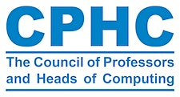

Funded through ongoing work at Manchester Metropolitan to develop AI Literacy resources, we will hold a 1-day workshop, bringing together educational leaders in Higher Education computing and technology departments from across the UK. We previously held the first edition of the workshop in July 2023, focussing on the impact of ChatGPT on computing education. The findings of the previous edition were co-developed into a policy white paper.
Large Language Models (LLMs) are transforming the way people work, especially in the tech sector, and their popularity poses an existential question to technology educators. How do we teach and how do we assess, considering the existence of AI Apps that are capable of performing well on traditional assessments? We believe that the fundamental answer to this question is through the development and dissemination of AI Literacy resources. Together we will collaboratively explore and co-develop AI Literacy resources for the usage of large language models (LLMs) such as ChatGPT within technology-focused degrees.
Participants of the workshop should expect to participate in AI Literacy training events with a critical eye to discover and discuss what works and what doesn't. We will take time to reflect on critical practice in AI literacy and how to embed this into the curricula of our respective institutions.
The outputs of the workshop will be published via this website and will include"
|
|
<--- |  | --->